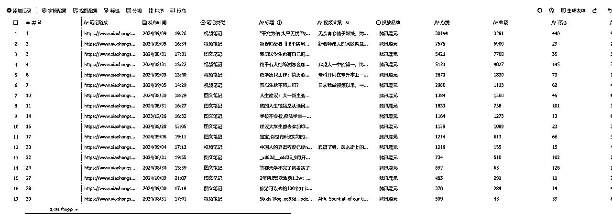

来源：https://ia0969wpr2.feishu.cn/docx/Q5JJdhMYAo2UfDx7jkecVewwnHc
和前两篇采集公众号和B站的文章背景相同，这篇文章还是上周亦仁老大提出的AI自媒体赛道的超级标，这次是小红书平台的数据，相比较而言范围更广一些，同样把原始数据都分享给大家。
一共采集了3451条 投放豆包/智谱清言/Kimi/天工/混元 等各大AI产品的商业广告笔记。其中这三千多条投放笔记对应了2658个达人，这部分达人具有比较高的对标价值，因为毕竟企业找他们投放了。当然这部分账号不全都是AI赛道的，有部分是教育赛道，科技赛道，但是投放笔记的内容是可以参考的，所以我又把这部分数据中的所有视频笔记共1700条使用whisper 提取了文案，然后使用AI修改文案错别字，提取关键词，一并附在表格中，方便分析投放账户中的内容策略，供大家参考。

图文笔记地址：
在线预览要在电脑端看，手机端好像会展示不可预览
因为视频笔记转录的文案有些太长，无法导入多维表格，所以放到了Excel中：
然后继续从商业投放笔记中提取出来的2898个账号信息进一步地采集了详情，包括账号基本信息，粉丝数、所有笔记条数、达人图文/视频比例占比、图文广告报价、视频笔记报价、30内涨粉数、30天内笔记数、半年内涨粉数、半年内笔记数。方便一目了然直观地确认最终的对标账号信息。地址：
从这些商业投放笔记中也可以看出很多有趣的事情，比如有的达人只有一千多条粉丝，笔记平均点赞几十个，但是也不妨碍他们接商单。投放品牌中豆包最多，其他还有通义千问文心一言、秘塔AI搜索、智谱清言等等，从投放比例来看大部分商单达人粉丝数都在3000以上等等。更多的分析角度大家可以见仁见智地去分析，原始数据都在这了。
上面是投放商业笔记的详情和账号信息，下面这部分数据是在小红书和不同数据平台以笔记内容为AIGC主导进行的采集，和上述账号去重后再次采集了共4859个账号，这部分账号有的是讲AI资讯、AI产品介绍，有的是使用AI做自媒体内容的创作，比如AI绘画，AI变现，AI副业等，本来这部分账号有一些严格来说不属于超级标的范围，但是这部分人也有一部分接了一些AI产品的广告，本身也可以参考，所以我也没有作进一步地排除，可以根据具体的粉丝比例和笔记总赞藏做筛选和对标。数据在“AI账号”的表中：
OK，总结下，一共采集了6891个AI产品投放&AI自媒体&AI内容创作领域的小红书账号，3451条各大公司投放的商业笔记详情，这部分数据已经上传到多维表格。另外还有采集了大概十几万条左右的相关笔记正在整理中，飞书多维表格限制行数，所以这部分数据可能会根据点赞数进行筛选后上传到飞书，预计这两天上传更新到原文档地址。
后续计划根据需求针对对标小红书账户做更深度的笔记和爆款内容二次创作。对于开通了店铺的达人同步采集了店铺中的所有商品、历史销量，作为辅助参考。
以上，希望对大家有帮助